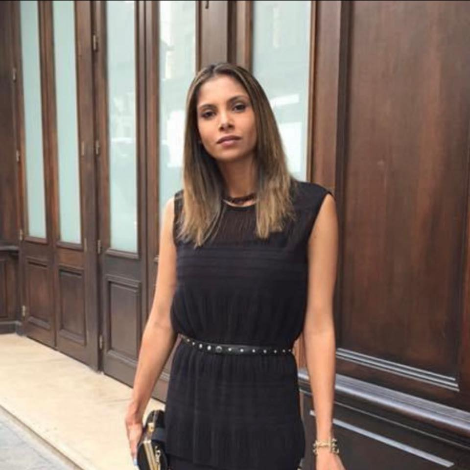
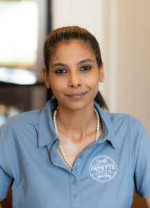
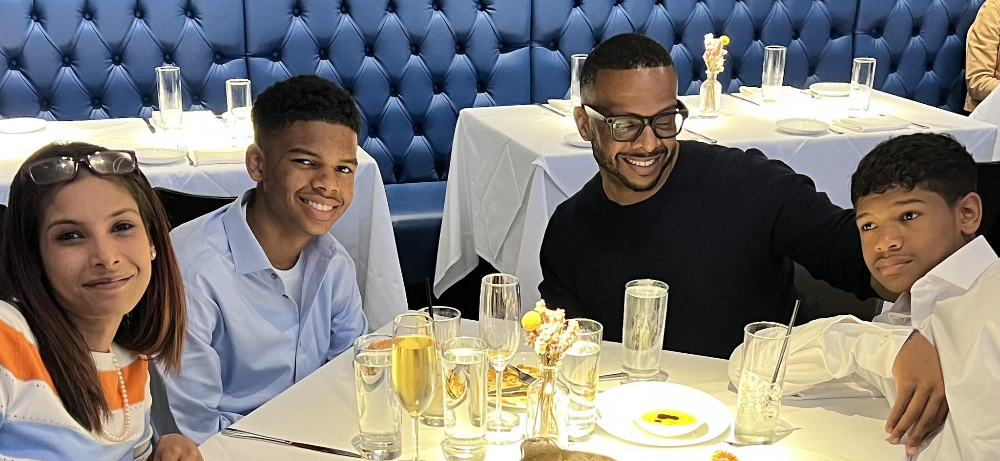

Empowering People & Driving Growth
From NY State Soccer Champion to overseeing operations for one of the Southeast’s premier roadside assistance companies. Now, nurturing top talent as an HR executive and actively supporting systemic innovation and crisis solutions alongside Hermetic Labs.

The Foundation
Heritage Meets Drive
Raised by immigrant parents from India, I grew up deeply aware of global disparities. This early perspective fostered an enduring empathy for those living without the resources many take for granted. I channelled my energy into competitive sports, playing varsity soccer throughout high school and achieving New York State Cup Champion status in the late '90s, while playing for the Olympic Development Program (ODP) in NY and later in Houston, TX.
Amigos de las Americas — Dominican Republic
During my early years, I embarked on a transformative journey with Amigos de las Americas. Living in a remote village in the Dominican Republic, I taught English and health classes and collaborated with locals on community projects. Witnessing firsthand how isolated communities lacked fundamental medical resources left a lasting imprint on me. It seeded a deep appreciation for the necessity of systemic health and crisis solutions—a concept that remains central to our family's mission today.
New York University
Following my service abroad—which earned me the President's Student Service Award—I later graduated from New York University’s Gallatin School. Majoring in Social Sciences with a concentration in International Studies, I merged my understanding of global humanities with a drive to enact real-world change. Before moving cross-country to begin my next chapter, I gained my earliest professional experience working within the HR and tourism industries in Manhattan.
Business & Human Resources
HELP Roadside Assistance
Alongside my husband, Dwayne, we bootstrapped HELP Roadside Assistance and scaled it into one of the largest soft-service providers in the country. Connecting the Southeast from Georgia up to Maryland, I oversaw our expansive operations, managed internal HR, and handled logistics infrastructure.
- Allstate Ring of Honor recipient.
- ACE Awards multi-year winner (2011–2022).
- Geico Customer Service Awards multi-year winner.
"From the inception of HELP, our primary mission was exactly that: helping people navigate incredibly stressful situations so they could safely return to their loved ones. Just as importantly, it allowed us to provide reliable jobs to hardworking people who didn't mind rolling up their sleeves for an honest paycheck."
After a monumental 14-year run shaping industry standards, we proudly closed the business in 2024 to pursue new ventures.
Strategic HR Consultant
Transitioning out of direct logistics operations, I returned to my first professional passion: Human Resources. Having led teams of dozens through high-pressure environments, I understand that a company's greatest asset—and its greatest variable—is its people.
I currently operate in deep advisory and internal roles supporting organizations within the logistics, technology, and aviation spaces.
"For me, Human Resources is never just about corporate architecture. It's about being an advocate for the human spirit at work—mediating, listening, and ensuring that good, hardworking people have the support they need to provide for their families while feeling truly valued."
Public Service
Fayette County Development Authority
Since 2018, I have proudly served on the Board of Directors for the FCDA, currently holding the position of Board Secretary.
Going on eight years, I have had a direct hand in shaping the economic boom of Fayette County, Georgia. It is incredibly rewarding to witness firsthand the strategic growth of our community infrastructure, attracting premier film industry developments like Trilith alongside state-of-the-art medical and technology hubs.
View the FCDA Board
Family First
I moved to Georgia years ago to marry my husband, Dwayne Tillman. Now deeply invested in technology and crisis management tools as the founder of Hermetic Labs, we continue to push each other professionally and personally.
However, my greatest achievement and the absolute center of my world are my two sons.

Everything I build, from businesses to robust community infrastructures, I build with their future in mind.